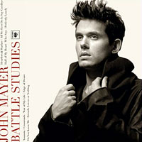
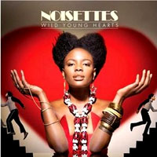
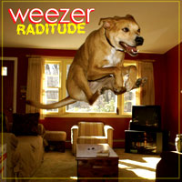
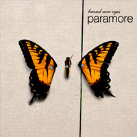

amfm's 20 ALBUMS OF 2009 (16 thru 20)
By: Ciera Mckissick
Whether you bought them, downloaded them, or pirated them (which hopefully you did not), these albums were “must hear” music from the past year. amfm looks back at some of the best albums of 2009. Who knows what 2010 will bring? Surely another slew of great music to saturate your inner musical airwaves.
20. John Mayer, Battle Studies
Before John Mayer became known for breaking up and making up with actress Jennifer Aniston, (and every other chick) he made great music, and he has since returned to his musical roots, taking the lessons he's learned in life and love, and has put it in his music in his fourth album, Battle Studies—his “ode to pop.” Mayer says the album "incorporates a lot of the lessons, a lot of the observations, and a little bit of advice. Like a handbook, like a heartbreak handbook." He must've learned a lot from past experiences if he can make an album that is an homage to a handbook for getting your heart broken. "Half of My Heart" is a duet with Taylor Swift, and two of the songs were written by rock legends Robert Johnson, and Bruce Springsteen--Mayer covers Robert Johnson's "Crossroads," and Bruce Springsteen's "I'm on Fire." This album is definitely a different kind of John Mayer, he takes chances with this album resulting in an intimate 46 minutes that are the best of his entire career. "Who Says," the first single from Battle Studies was well received, despite a little controversy over the lyrics, "Who says I can't get stoned?" Mayer cleared that one up saying that he intended for it to be seen as getting high on life, which listeners everywhere can do by popping in Mayer's CD.
[WHO SAYS]
19. The Noisettes, Wild Young Hearts
Making some noise with their second album, Wild Young Hearts, UK band, The Noisettes are bringing their old-time "60's flavor to the US charts. The Noisettes have been widely popular in the UK and are on the brink of breaking out in the United States. Their second single, "Don't Upset the Rhythm" was well received and landed the band the opportunity to perform on late night and daytime talk shows. Their music is a fun divergence from the mainstream music that is popular, and is known for their crazy live sets. Front woman, Shingai Shoniwa, is a stand out for her dramatic voice and demeanor. The band will only get better over time, and will surely be showing up more in the States as they gain more and more momentum in the year to come.
[DON'T UPSET THE RHYTHM]
18. Weezer, Ratitude
Weezer came back this year with their seventh studio following up their 2008 release of The Red Album, popular which revealed a bit of a different direction than some of their more popular albums—The Green Album and their debut Weezer. Their most recent, “Ratitude," is a representation of the times we live in, where mainstream seems to be monopolizing music, in the sense that one would have never guessed that Ratitude's bonus features would include a mash-up of MGMT's Kids and Lady Gaga's PokerFace. Their album is a light take on life, a theme Weezer is no stranger to. "(If You're Wondering if I Want You To) I Want You To" was the first single from the album and the upbeat tone illustrated the band's youthful outlook, despite having been around for so long. The band has been busy promoting their album and their most recent endeavor—Weezer Snuggies, so you can snuggie up and relax in ratitude...
[(IF YOU'RE WONDERING IF I WANT YOU TO) I WANT YOU TO]
17. Paramore, Brand New Eyes
Despite internal band turmoil, growing up, and fears of their third album not living up to their 2008 release Riot!, Paramore's most recent album Brand New Eyes is their best album yet. The album debuted on the Billboard charts at number two. The album title is alluding to the band trying not to let any setbacks hinder the reason they began making music in the first place by looking at the situation with brand new eyes. "Brick by Boring Brick" alludes to a longing for innocence as the band is growing up in the midst of stardom. The fledgling band and front woman Hayley Williams, have matured since their last CD and it shines through in the tracks. "The Only Exception" is one of the albums best songs. "And that was the day that I promised I'd never sing of love if it does not exist/ But darlin' you/are/ the only exception." Williams' voice is smooth and mellow, the guitar is soothing, almost like a lullaby. It's truly a beautiful song. "Misguided Ghosts" is another example of how stunning Williams' is and how the band can make a total 180. The song is so pure and raw. You feel like Paramore is in the room with you--the guitar is right there, you can hear the fingers touch the strings. The song "Ignorance" reflects a summer spent touring with No Doubt, alluding to rhythm of No Doubt's "Excuse Me Mister" from Tragic Kingdom. Paramore stands out from the rest of the band's in their genre and most of it has to do with sheer talent, energy and the amazing Williams.
[IGNORANCE]
16. Rihanna, Rated R
With the November release of her newest album Rated R, the wait was finally over for pop and R&B princess, Rihanna, to make her way back to the limelight. Following the success of her previous album, Good Girl Gone Bad, and bouncing back from the altercation with then boyfriend Chris Brown, Rihanna prevails again. This album features a darker and edgier Rihanna(Yes, she could get more edgy.) It is a representation of her emerging from the darkness of a hiatus lasting months, and pouring that into her music. The album is layered with emotions, and is a very personal look at the singer. "Russian Roulette," which was written and produced by Ne-Yo explores suicide and violence. The song begins with a haunting guitar and ends with a gunshot. The album goes hard—there’s even a song called “Hard,” where Rihanna sings about how she’s “so hard, too hard, too hard.” “Mad House,” an interlude, is straight out of a horror movie. Wish it were a whole song…The album runs smooth as each track transitions perfectly into the next. She also joins forces with Will.i.am, Young Jeezy, Slash and Justin Timberlake on the album. Rihanna has displayed her ability to reinvent herself with each album, from "Pon de Replay" to "Umbrella" to songs like "Russian Roulette" and "The Wait is Ova," she has secured herself a spot on the top yet again. Can't say the same for her ex...
[THE WAIT IS OVA]
1| 2 | 3 | 4 | LISTENING PAGE